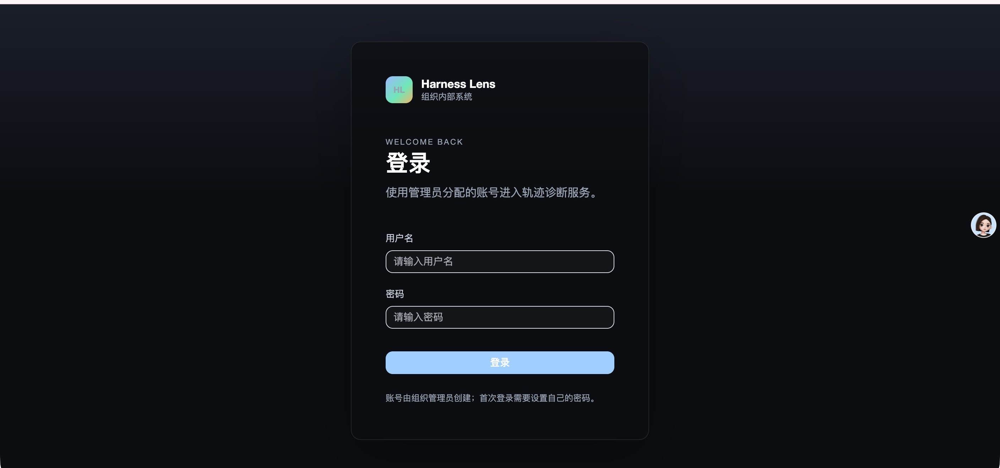
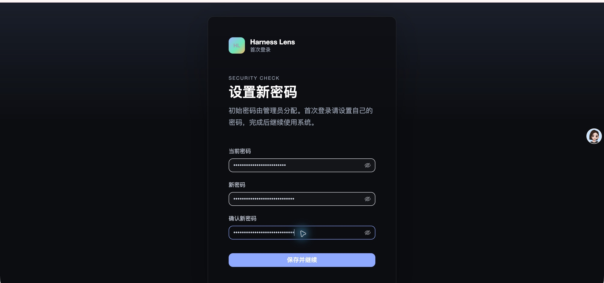
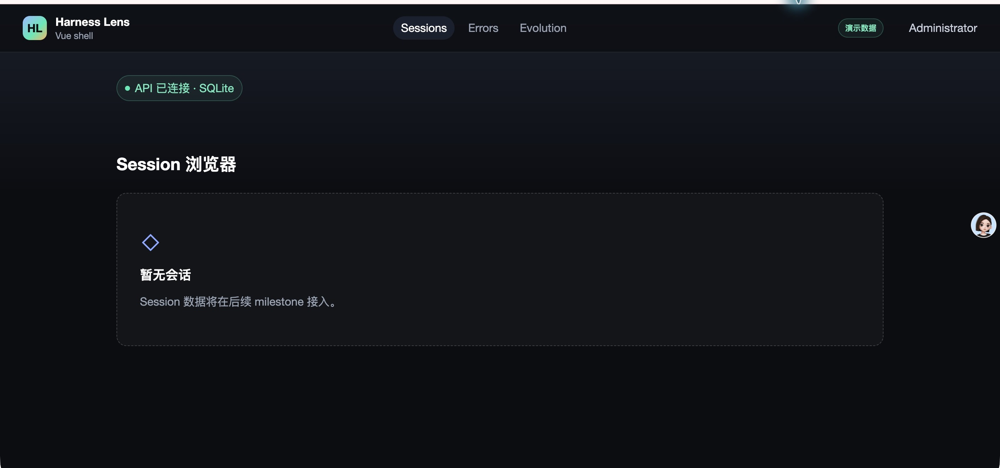
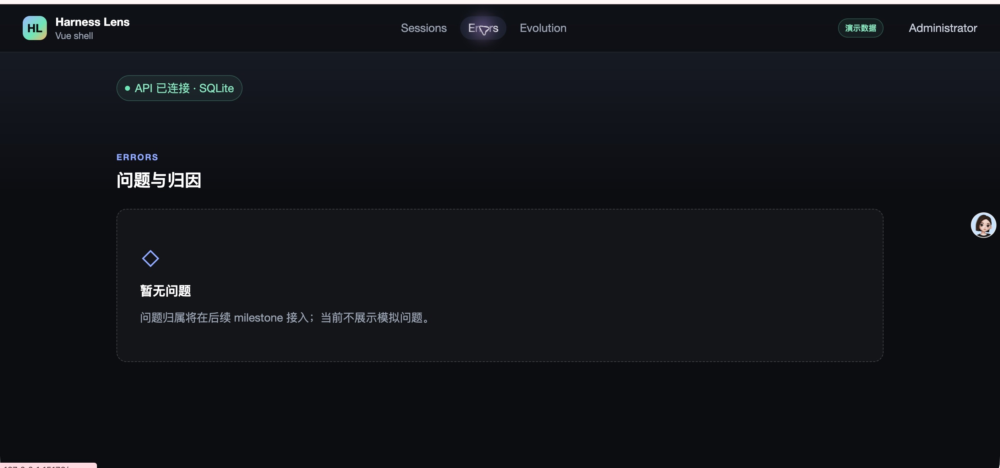
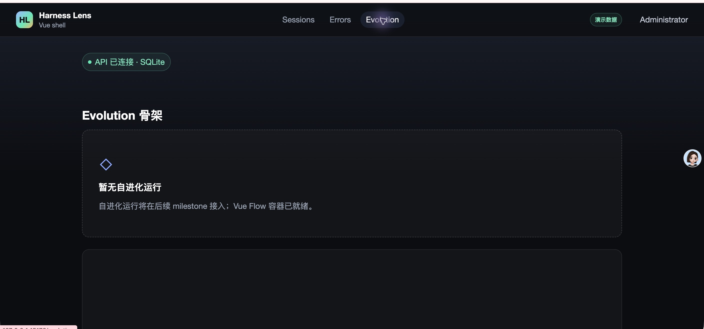

- Issue
- #33 · M2-01 synthetic fixtures
- PR
- #83
- Commit
- febddaa
- Database
- 临时 SQLite，真实 Alembic 迁移
- Browser
- Google Chrome + CDP 控制台断言
Harness Evolution · PR #83
M2-01 合成 Fixtures 集成冒烟报告
在真实 SQLite、FastAPI、Vite 与 Chrome 上验证四会话合成语料、严格校验、事务化幂等 seed、运行态字段保护、双次执行和真实登录壳。fixture 静态检查与 22 项聚焦回归通过，浏览器 E2E 4/4 通过，未发现集成缺陷。
4根会话
8Agent
7JSONL payload
0缺陷
Environment and Artifact
2026-10-25 · macOS · Chrome · FastAPI + Vite + SQLiteScenario Matrix
15 pass| # | 场景 | 结果 | 观测 | 证据 |
|---|---|---|---|---|
| 01 | 静态 corpus 校验 | PASS | fixtures:check 返回 4 roots、8 agents、2841 bytes、status=valid；再次执行结果一致。 | fixtures:check ×2 8 个 fixture 文件 SHA-256 已记录 |
| 02 | 空库首次 seed | PASS | 真实 Alembic 升级后 corpus seed 返回 44 inserted、0 changed、4 roots、8 agents、7 payloads。 | fixtures:seed first run |
| 03 | 四会话树结构 | PASS | 数据库含四个稳定根 ID；Agent 分布为 4 main、2 subagent、1 workflow、1 forked-skill subagent。 | SQLite 查询 screenshots/03-sessions.jpeg |
| 04 | 真实表写入 | PASS | session_families=4、agents=8、trajectory_payloads=7、source_records=7、agent_events=3、user_turns=4、bad_cases=4、probe_reports=2、evolution_targets=1。 | SQLite 表计数 |
| 05 | 派生假数据隔离 | PASS | probe_clusters、evolution_runs、evolution_rounds、evolution_finals 均为 0；未伪造运行、簇、轮次或终评。 | SQLite 派生表计数 |
| 06 | 重复 seed 幂等 | PASS | 相同 corpus 再次执行返回 0 inserted、0 changed、status=noop，稳定 ID 与时间戳保持不变。 | fixtures:seed second run |
| 07 | 运行态处理字段保护 | PASS | 人工写入 received_at、processed_at、processed_hash、parser_version、last_sync_run_id 后重跑 seed，五个值全部原样保留。 | SQLite 前后对照 focused fixture suite |
| 08 | 目标归属保护 | PASS | 将 evolution_targets.created_by 指向真实 admin 后重跑 seed，归属仍保持，seed 返回 0 changed。 | SQLite join users 验证 |
| 09 | 严格语料拒绝 | PASS | 聚焦测试覆盖未知字段、重复 JSON key、错误 session/agent、主 Agent badCase 非空、路径逃逸、凭据 URL、畸形/超大 JSONL、未知文件与 hash/line drift；22 passed。 | pnpm test:api -- tests/m2-01-synthetic-fixtures |
| 10 | CLI 稳定失败 | PASS | 不存在的 corpus 返回 exit 2 与单行 stderr，无 Python traceback。 | HE_FIXTURE_CORPUS=<missing> fixtures:check |
| 11 | 生产与 live 拒绝 | PASS | phase=live 时 seed 在开启数据库前拒绝，exit 2；生产拒绝由同一环境守卫测试覆盖。 | HE_PHASE=live fixtures:seed seed environment tests |
| 12 | 真实登录与首次改密 | PASS | Chrome 中 admin 登录进入强制改密页，提交新密码后回跳 Sessions，顶栏显示 demo 角标与当前用户。 | screenshots/01-login.jpeg screenshots/02-change-password.jpeg |
| 13 | 三大入口与空态 | PASS | Sessions、Errors、Evolution 三个入口可达，active 状态与后续 milestone 空态文案正确，未展示伪造领域列表。 | screenshots/03-sessions.jpeg screenshots/04-errors.jpeg screenshots/05-evolution.jpeg |
| 14 | 浏览器回归 | PASS | 真实 Chrome E2E 4/4：390px 无横向溢出、直接 Evolution 深链无 Vue Flow warning、409 message 可见、health 503 retry 恢复。 | pnpm test:e2e -- m1-shell：4 passed |
| 15 | 敏感数据卫生 | PASS | fixtures 与报告未发现本机用户路径、Bearer/JWT、环境密码或 API key；截图已裁剪到应用内容区，不包含其他浏览器标签或账号信息。 | 敏感标记扫描 截图隐私复核 |
Issues and Observations
No defects foundNo defects were found.
Evidence
5 screenshots




Automated Coverage Assessment
4 areas reviewed| 区域 | 覆盖 | 结论 | 建议 |
|---|---|---|---|
| Fixture schema | 22 项 pytest + fixtures:check | 静态结构、哈希、路径、大小、JSONL 与跨引用校验均通过。 | 保持 fixtures:check 在 CI 前置执行。 |
| Seed 数据库 | 真实 SQLite + Alembic + CLI | 首次 44 行、第二次 0/0，运行态字段和目标归属不被覆盖。 | MySQL 由 PR CI 的真实 service container 继续验证。 |
| 浏览器 UI | Computer Use + CDP | 登录、改密、三入口、demo、390px 与控制台清洁均通过。 | 会话列表读接口接入后，在 m2-06 增补真实数据 UI 冒烟。 |
| 领域展示 | 不在 M2-01 范围 | M2-01 已验证真实表数据，但尚无会话列表 API，页面不伪造列表。 | 由后续 M2 API/UI issue 消费相同表。 |
Conclusion
通过四会话合成 fixture 可确定性校验、真实落库、重复 seed 零副作用，并保持后续运行态数据；真实浏览器壳与回归无明显缺陷。
- 首次 seed 44 行，重复 seed 0 inserted / 0 changed。
- 四根会话、8 Agent、7 payload 与零派生假数据符合设计边界。
- 真实 Chrome E2E 4/4，浏览器控制台无意外 warning/error。
证据源：Computer Use 截图、真实 CLI/SQLite 查询、fixture 聚焦测试、Chrome CDP E2E。HTML 由 report-data.json 生成，不应手改。